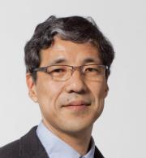

発表会情報
●日時： 2012/09/22 10:30 to 17:00 (10:00開場)
●会場： 明治大学 生田校舎 中央館6階メディアホール （神奈川県川崎市多摩区東三田1-1-1 ）
●主催： 明治大学 宮下研究室 http://miyashita.com
●概要： 普通じゃないプログラミングを発表する場
●発表申込締切： 2012年9月11日23時59分59秒
●懇親会： 17:00～ 懇親会費500円，大学２年生以下無料で行います．お気軽にご参加ください．
ABProとは
自作の「普通じゃないプログラム作品」を発表しあう会，それがABProです．
高度な技術や専門的な知識を用いるのも良いですが，我々が目指すのは，
人を驚かせ，笑わせ，幸せにするようなプログラムです．
発表時の注意：
発表は原則製作者が行ってください．
発表時間は午前セッション３分，午後セッション５分を予定しております．
発表するものは，「プログラムなら何でも可」とします．
ハードウェアであるかソフトウェアであるかは問いません．
ネットワーク接続については約束できません．
ネットワークに繋がらなくてもローカルで動くものを発表してください．
発表に関して，当日会場で発表できない場合は，ビデオレターでの発表を許可致します．ただし，
「会場に作品を持ち込みできない」などの理由で作品をビデオ映像だけで発表することは認めません．
Ustreamなどの映像配信は行いません．Twitterハッシュタグを用いたスクリーンは用意する予定です．
特別講演：「ＨＳＰ誕生から未来構想まで」おにたま
国産の手軽なプログラミング環境として、1994年から開発が開始され、
1996年以降フリーウェアとして公開されているプログラミング言語、
Hot Soup Processor(ＨＳＰ)の開発経緯から、現在までの道のり、
そして今後の展望まで、作者の「おにたま」氏に紹介していただきます。
違った切り口により、手軽さ・わかりやすさといったテーマに取り組んだ理由や、
多くのユーザーに支持されたポイントなど、ＨＳＰに込められた思いを語っていただきます！
Hot Soup Processor http://hsp.tv
アーカイブ
プログラム 飛び入り参加大歓迎!!
| 10:00 | 開場 受付開始 | 12:00 | 昼休憩 | ||||
| 10:30 | 午前セッション | 13:00 | 特別講演 ＨＳＰ誕生から未来構想まで | 15:20 | 午後セッションB | ||
| 鈴木誠也 | 講演者：おにたま ONION software | 宮下芳明 明治大学准教授 | |||||
 | 井川洋平 | 13:30 | 午後セッションA | 山本涼太 | |||
| 矢田裕基 チームラボ 未踏クリエータ | 永瀬翔 | 落合陽一 東京大学暦本研究室 未踏スーパークリエータ | |||||
| 大島裕樹 | 中橋雅弘 | 大江龍人 筑波大学田中研究室 | |||||
| 湯村翼 Koozyt JAIST 丹研究室 |  | 川名勇気 | 吉田有花 明治大学宮下研究室 未踏クリエータ | ||||
 | 藤掛悠 | 前田晴己 | 極秘 ドリコム | ||||
| 中村美惠子 | y42sora | 極秘 ドリコム | |||||
| 今佑介 | 高橋治輝 | 森下幸司 | |||||
| 貫貴裕 | 黒澤祐也 | 大家眸美 | |||||
 | 飯田憲吾 | 加藤邦拓 |  | 秋山耀 | |||
| 三橋亜美 |  | 渡邊恵太 JST ERATO |  | 阿原一志 明治大学准教授 | |||
| 中村裕美 明治大学宮下研究室 未踏スーパークリエータ | 橋本直 JST ERATO | 栗原一貴 産総研 イグノーベル賞受賞 | |||||
| ぼへー | 中村聡史 京都大学大学院特定准教授 | 榊原絵里 | |||||
| 馬場さおり | 武田港 | 山中祥太 | |||||
| 嶋本諒太 | 瀬戸優之 | 17:00 | 懇親会 | ||||
| 佃洸摂 京都大学田中研究室 未踏スーパークリエータ | |||||||
| 松野祐典 |
運営委員会
| 運営委員長 | M2 中橋 雅弘 | 副運営委員長 | M1 永瀨 翔 | 運営委員 | B4 井川 洋平 | ||
| 運営委員 | D3 中村 美惠子 | 運営委員 | M1 嶋屋 友佳 | B4 鈴木 悠司 | |||
| D2 中村 裕美 | M1 前田 晴己 | B4 高橋 治輝 | |||||
| M2 太田 佳敬 | M1 松野 祐典 | B4 貫 貴裕 | |||||
| M2 馬場 さおり | M1 山本 涼太 | B4 吉田 有花 | |||||
| M2 松岡 拓人 | B4 大島 裕樹 | B3 飯田 憲吾 | |||||
| M2 山中 祥太 | B4 大家 眸美 | B3 川名 勇気 | |||||
| M1 榊原 絵里 | B4 加藤 邦拓 | B3 鈴木 誠也 | |||||
| M1 嶋本 諒太 | B4 黒澤 祐也 | B3 藤掛 悠 | |||||
| B3 三橋 亜美 |
●Let's tweet!: